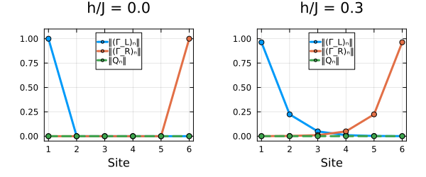

Parafermion edge modes
The $\mathbb{Z}_p$ parafermion chain generalizes the Kitaev chain: Majoranas become parafermions and fermion parity becomes a $\mathbb{Z}_p$ charge. We introduce the parafermion algebra, build the chain, and characterize its edge modes using only the ground states, exactly as in the interacting Kitaev chain example.
using FermionicHilbertSpacesimport FermionicHilbertSpaces as FHSusing FermionicHilbertSpaces: indices, sector, quantumnumbersusing LinearAlgebra, LowRankMatricesusing Arpack, PlotsParafermion algebra
@parafermions p c defines Fock parafermions $c_j$ with $p$ states per site, $n_j = 0, \dots, p-1$. With $\omega = e^{2\pi i/p}$, they satisfy the on-site relations
\[c_j^p = 0, \qquad (c_j^\dagger)^m c_j^m + c_j^{p-m} (c_j^\dagger)^{p-m} = 1 \quad (0 < m < p),\]
and pick up a phase when exchanged between sites $i < j$,
\[c_i c_j = \omega^{\sigma} c_j c_i, \qquad c_i^\dagger c_j = \omega^{-\sigma} c_j c_i^\dagger,\]
where $\sigma = \pm 1$ is fixed by the ordering convention. For $p = 2$ these are ordinary fermions. Let's check the relations on two sites.
p = 3ω = cis(2π / p)@parafermions p cH2 = hilbert_space(c, 1:2)c1, c2 = representation(c[1], H2), representation(c[2], H2)σ = c1 * c2 ≈ ω * c2 * c1 ? 1 : -1(; σ, nilpotent=iszero(c1^p), onsite=all((c1')^m * c1^m + c1^(p - m) * (c1')^(p - m) ≈ I for m in 1:(p-1)), exchange=c1 * c2 ≈ ω^σ * c2 * c1 && c1' * c2 ≈ ω^(-σ) * c2 * c1')(σ = -1, nilpotent = true, onsite = true, exchange = true)Since $(c_j^\dagger)^k c_j^k$ projects onto $n_j \geq k$, the occupation is $n_j = \sum_{k=1}^{p-1} (c_j^\dagger)^k c_j^k$, and the on-site charge $Z_j = \omega^{n_j}$ is
\[Z_j = 1 + \sum_{k=1}^{p-1} \left(\omega^k - \omega^{k-1}\right) (c_j^\dagger)^k c_j^k .\]
The global charge $Q = \prod_j Z_j = \omega^{\sum_j n_j}$ plays the role of fermion parity.
Just as a fermion splits into two Majoranas, each site hosts two unitary parafermions
\[\chi_{2j-1} = c_j^\dagger + c_j^{p-1}, \qquad \chi_{2j} = \bar\zeta\, \chi_{2j-1} Z_j^{-\sigma}, \qquad \zeta = \omega^{(p-1)/2},\]
which obey
\[\chi_a^p = 1, \qquad \chi_a \chi_b = \omega^{\sigma} \chi_b \chi_a \quad (a < b),\]
the $\mathbb{Z}_p$ version of $\gamma_a^2 = 1$, $\gamma_a \gamma_b = -\gamma_b \gamma_a$. Each $\chi_a$ raises the charge by one, $Q \chi_a = \omega \chi_a Q$. The phase $\bar\zeta$ ensures $\chi_{2j}^p = 1$ also for even $p$; for $p = 2$ the $\chi_a$ are the usual Majoranas.
ζ = cis(π * (p - 1) / p)Z(j) = I + sum((ω^k - ω^(k - 1)) * (c[j]')^k * c[j]^k for k in 1:(p-1))Zpow(j) = σ == 1 ? Z(j)' : Z(j) # Z_j^{-σ}χ(a) = isodd(a) ? c[(a+1)÷2]' + c[(a+1)÷2]^(p - 1) : conj(ζ) * χ(a - 1) * Zpow(a ÷ 2)χs = [representation(χ(a), H2) for a in 1:4]4-element Vector{SparseArrays.SparseMatrixCSC{ComplexF64, Int64}}:
sparse([2, 3, 1, 5, 6, 4, 8, 9, 7], [1, 2, 3, 4, 5, 6, 7, 8, 9], ComplexF64[1.0 + 0.0im, 1.0 + 0.0im, 1.0 + 0.0im, 1.0 + 0.0im, 1.0 + 0.0im, 1.0 + 0.0im, 1.0 + 0.0im, 1.0 + 0.0im, 1.0 + 0.0im], 9, 9)
sparse([2, 3, 1, 5, 6, 4, 8, 9, 7], [1, 2, 3, 4, 5, 6, 7, 8, 9], ComplexF64[-0.4999999999999998 - 0.8660254037844387im, 0.9999999999999998 - 1.1102230246251565e-16im, -0.5 + 0.8660254037844386im, -0.4999999999999998 - 0.8660254037844387im, 0.9999999999999998 - 1.1102230246251565e-16im, -0.5 + 0.8660254037844386im, -0.4999999999999998 - 0.8660254037844387im, 0.9999999999999998 - 1.1102230246251565e-16im, -0.5 + 0.8660254037844386im], 9, 9)
sparse([4, 5, 6, 7, 8, 9, 1, 2, 3], [1, 2, 3, 4, 5, 6, 7, 8, 9], ComplexF64[1.0 + 0.0im, -0.4999999999999999 + 0.8660254037844387im, -0.5000000000000002 - 0.8660254037844385im, 1.0 + 0.0im, -0.4999999999999999 + 0.8660254037844387im, -0.5000000000000002 - 0.8660254037844385im, 1.0 + 0.0im, -0.49999999999999944 + 0.8660254037844388im, -0.5000000000000002 - 0.8660254037844385im], 9, 9)
sparse([4, 5, 6, 7, 8, 9, 1, 2, 3], [1, 2, 3, 4, 5, 6, 7, 8, 9], ComplexF64[-0.4999999999999998 - 0.8660254037844387im, 1.0 + 5.551115123125783e-17im, -0.4999999999999999 + 0.8660254037844386im, 0.9999999999999998 - 1.1102230246251565e-16im, -0.49999999999999933 + 0.866025403784439im, -0.5000000000000008 - 0.8660254037844384im, -0.5 + 0.8660254037844386im, -0.5000000000000017 - 0.8660254037844375im, 0.9999999999999997 - 1.7763568394002505e-15im], 9, 9)The model
We study the parafermion chain
\[H = -J \sum_{j=1}^{N-1} \left(\zeta\, \chi_{2j}^\dagger \chi_{2j+1} + \mathrm{h.c.}\right) - h \sum_{j=1}^{N} \left(\zeta\, \chi_{2j-1}^\dagger \chi_{2j} + \mathrm{h.c.}\right).\]
Every term is charge neutral, so $H$ conserves $Q$. The phase $\zeta$ makes each bilinear $\zeta \chi_a^\dagger \chi_b$ a unitary with eigenvalues $\omega^k$, so each term has energies $-2\cos(2\pi k/p)$ with a unique minimum. The on-site term is simply $-h\sum_j (Z_j + Z_j^\dagger)$. For $p = 2$ this is the Kitaev chain at $t = \Delta$; for $p = 3$ it is dual to the three-state Potts chain.
The physics mirrors the Kitaev chain:
- At $h = 0$ the bond terms commute and $\chi_1$, $\chi_{2N}$ are absent from $H$: they are exact zero modes. The $N-1$ bond conditions leave $p$ ground states, one per charge sector, and $\chi_1$ cycles through them.
- For $0 < h < J$ (topological phase) the ground states split by an amount exponentially small in $N$, and the edge modes spread over a correlation length. The chain is critical at the self-dual point $h = J$ and trivial for $h > J$.
- Unlike the free Kitaev chain, this non-chiral chain has no strong zero modes for $h > 0$: the edge modes only exist within the ground space. This is why we build them from the ground states alone.
parafermion_chain(J, h, N) = -J * sum(ζ * χ(2j)' * χ(2j + 1) + hc for j in 1:(N-1)) - h * sum(ζ * χ(2j - 1)' * χ(2j) + hc for j in 1:N)# Sanity check: the end parafermions commute with H at h = 0.Hsmall = hilbert_space(c, 1:3)H0 = representation(parafermion_chain(1.0, 0.0, 3), Hsmall)@assert all(norm(H0 * E - E * H0) < 1e-10 for E in (representation(χ(a), Hsmall) for a in (1, 6)))Ground states
We split the Hilbert space into charge sectors and find the lowest state $|q\rangle$ in each, labelled by $Q|q\rangle = \omega^q |q\rangle$.
N = 6H = constrain_space(hilbert_space(c, 1:N), FHS.SectorConstraint(FHS.parafermion_charge))Hmodes = [hilbert_space(c, j:j) for j in 1:N]Qop = prod(representation(Z(j), H) for j in 1:N)function ground_states(ham) states = map(quantumnumbers(H)) do qn Hsec = sector(qn, H) vals, vecs = eigs(representation(ham, Hsec); nev=1, which=:SR) ψ = zeros(ComplexF64, dim(H)) ψ[indices(Hsec, H)] = vecs[:, 1] q = mod(round(Int, angle(dot(ψ, Qop, ψ)) * p / 2π), p) (; q, energy=real(first(vals)), ψ) end return sort!(states; by=s -> s.q)endBoundary modes from the ground states
In the Kitaev example the Majoranas are $\gamma = |o\rangle\langle e| + \mathrm{h.c.}$ and $\tilde\gamma = i|o\rangle\langle e| + \mathrm{h.c.}$ The general charge-raising operator on the ground space is
\[\Gamma = \sum_{q=0}^{p-1} c_q\, |q+1\rangle\langle q| \qquad (q \bmod p),\]
and for $p = 2$, $c = (1, 1)$ and $c = (i, -i)$ give $\gamma$ and $\tilde\gamma$. Rephasing $|q\rangle \to e^{i\theta_q}|q\rangle$ maps $c_q \to e^{i(\theta_{q+1} - \theta_q)} c_q$, so choosing $c$ is the same as fixing the arbitrary phases returned by the eigensolver. We fix them by locality. The reduction $R_n$ to site $n$ (partial_trace) is linear, so the weight of $\Gamma$ on site $n$ is a quadratic form,
\[\|R_n(\Gamma)\|_F^2 = c^\dagger M_n c, \qquad (M_n)_{qq'} = \operatorname{tr}\left[R_n(|q+1\rangle\langle q|)^\dagger R_n(|q'+1\rangle\langle q'|)\right],\]
and the most localized left (right) mode $\Gamma_L$ ($\Gamma_R$) is the top eigenvector of $M_1$ ($M_N$). We normalize $\|c\|^2 = p$, so that $|c_q| = 1$ for a perfectly localized mode, and fix the overall phase by $\prod_q c_q > 0$, so that $\Gamma^p$ is the ground-space projector, mirroring $\chi^p = 1$. Good parafermion modes obey $\Gamma_L \Gamma_R = \omega^\sigma \Gamma_R \Gamma_L$, like $\chi_1$ and $\chi_{2N}$.
Local distinguishability or global charge?
The third curve in the Kitaev example is $\|(i\gamma\tilde\gamma)_n\|$, where $i\gamma\tilde\gamma = |o\rangle\langle o| - |e\rangle\langle e|$ is the parity in the ground space, so its reduction $\rho_o^{(n)} - \rho_e^{(n)}$ measures how well site $n$ distinguishes the ground states. One could generalize this to $\max_{q<r} \tfrac12 \|\rho_q^{(n)} - \rho_r^{(n)}\|_1$, but that is a nonlinear, pairwise quantity with no operator behind it. The natural generalization is the global charge in the ground space,
\[Q_{\mathrm{gs}} = \sum_q \omega^q |q\rangle\langle q|, \qquad R_n(Q_{\mathrm{gs}}) = \sum_q \omega^q \rho_q^{(n)} .\]
- For $p = 2$ it is $i\gamma\tilde\gamma$ (up to sign), the Kitaev measure.
- For ideal modes, $\Gamma_L\Gamma_R = \omega^\sigma\Gamma_R\Gamma_L$ implies $\Gamma_L^\dagger \Gamma_R \propto Q_{\mathrm{gs}}^{-\sigma}$: the charge is stored jointly by the two edges, just like the parity $i\gamma_L\gamma_R$.
- It is independent of the phases of the ground states.
- It measures local distinguishability: $R_n(Q_{\mathrm{gs}}^k)$ are the Fourier components of $\{\rho_q^{(n)}\}$, which all vanish iff the $\rho_q^{(n)}$ are equal. For $p = 3$, $Q_{\mathrm{gs}}^2 = Q_{\mathrm{gs}}^\dagger$, so $\|R_n(Q_{\mathrm{gs}})\|_1 = 0$ alone is equivalent to local indistinguishability.
- It bounds the first-order splitting $\delta E_q = \operatorname{tr}(V \rho_q^{(n)})$ caused by a perturbation $V$ on site $n$. For $p = 3$,
\[\sqrt{\tfrac12 \textstyle\sum_{q<r} (\delta E_q - \delta E_r)^2} = \Big|\sum_q \omega^q \delta E_q\Big| \leq \|V\|\, \|R_n(Q_{\mathrm{gs}})\|_1 .\]
We plot trace norms divided by $p$, so a mode fully localized on site $n$ gives $1$. As in the Kitaev example, LowRankMatrix avoids forming dense $p^N \times p^N$ operators.
trace_norm(A) = sum(svdvals(A))function boundary_modes(states) ket(q) = states[mod(q, p)+1].ψ reductions(a, b) = [partial_trace(LowRankMatrix(ket(a), conj(ket(b))), H => Hn) for Hn in Hmodes] Rshift = [reductions(q + 1, q) for q in 0:(p-1)] # Rshift[q+1][n] = Rₙ(|q+1⟩⟨q|) Rdiag = [reductions(q, q) for q in 0:(p-1)] # Rdiag[q+1][n] = Rₙ(|q⟩⟨q|) reduced(n, coeffs, R) = sum(coeffs[k] * R[k][n] for k in 1:p) function most_localized(n) M = Hermitian([tr(Rshift[a][n]' * Rshift[b][n]) for a in 1:p, b in 1:p]) v = eigen(M).vectors[:, end] return sqrt(p) * cis(-angle(prod(v)) / p) * v end cL, cR = most_localized(1), most_localized(N) profile(coeffs, R) = [trace_norm(reduced(n, coeffs, R)) / p for n in 1:N] return (; cL, cR, ΓL=profile(cL, Rshift), ΓR=profile(cR, Rshift), Q=profile(ω .^ (0:(p-1)), Rdiag))endResults
We analyze the chain at the exactly solvable point and at two values of $h$ in the topological phase. Besides the ground-state splitting, we compute the group commutator $\operatorname{tr}(\Gamma_L \Gamma_R \Gamma_L^\dagger \Gamma_R^\dagger)/p$, which equals $\omega^\sigma$ for ideal parafermion modes.
shift = circshift(Matrix(I, p, p), (1, 0)) # Σ_q |q+1⟩⟨q| in the basis of ground statesfunction analyze(h; J=1.0) states = ground_states(parafermion_chain(J, h, N)) modes = boundary_modes(states) energies = [s.energy for s in states] return (; h, splitting=maximum(energies) - minimum(energies), modes...)endresults = analyze.([0.0, 0.3])[(; r.h, r.splitting) for r in results]2-element Vector{@NamedTuple{h::Float64, splitting::Float64}}:
(h = 0.0, splitting = 2.842170943040401e-14)
(h = 0.3, splitting = 0.0005200424639131285)At $h = 0$ each mode sits on a single end site and $\|Q_n\|$ vanishes everywhere: no local measurement distinguishes the ground states. As $h$ grows, the modes spread into the bulk and $\|Q_n\|$ becomes finite, signalling that local perturbations split the ground states.
function locality_panel(r) kwargs = (; lw=3, marker=true, markerstrokewidth=2) fig = plot(; xlabel="Site", title="h/J = $(r.h)", frame=:box, xticks=1:N, ylims=(-0.05, 1.1), legend=:top) plot!(fig, 1:N, r.ΓL; label="‖(Γ_L)ₙ‖", kwargs...) plot!(fig, 1:N, r.ΓR; label="‖(Γ_R)ₙ‖", kwargs...) plot!(fig, 1:N, r.Q; label="‖Qₙ‖", linestyle=:dash, kwargs...) return figendplot(locality_panel.(results)...; layout=(1, 2), size=(600, 250), margin=5Plots.mm)
This page was generated using Literate.jl.